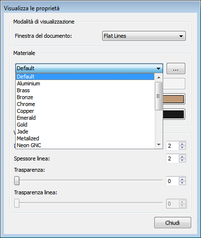

This documentation is not finished. Please help and contribute documentation.
See Draft ShapeString for good documented Command. Gui Command gives an overview over commands. And see List of Commands for other commands.
Go to Help FreeCAD to contribute.
|
| Emplacement du menu |
|---|
| Affichage → Apparence |
| Ateliers |
| Tousl |
| Raccourci par défaut |
| Voir aussi |
| Définir couleurs |
Contents |
Cette fonction permet de définir l'aspect et en particulier à définir l'objet matériel.
Utilisation
- Sélectionnez un objet,
- Lancer la fonction dans le menu principal avec Affichage → Apparence, ou en appuyant sur l'objet dans l'arbre avec clic-droit, ou en cliquant sur l'objet avec clic-droit dans le document.
L'onglet Afficher les propriétés apparaît
{kind=link}
 Certaines propriétés indiquées dans Afficher les propriétés sont également présentes dans l'onglet Affichage.
L'élément fenêtre du document est utilisé pour établir le mode d'affichage des faces, des lignes, etc.
La boîte matériau est utilisé pour choisir le matériel utilisé pour l'objet.
Certains matériaux sont disponibles par défaut.
{kind=link}
{kind=link}
.
Les modifications apportées aux réglages de ces fiches se retrouventt également onglet Affichage. Pour changer les couleurs des faces individuelles d'un solide voir le Définir Couleurs